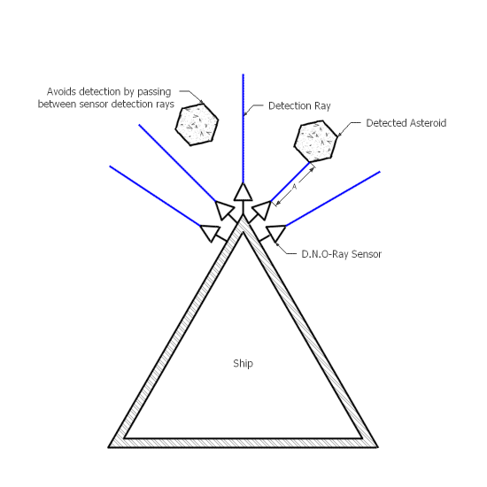
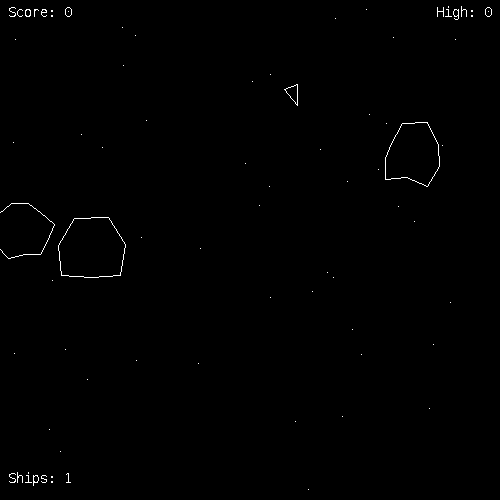
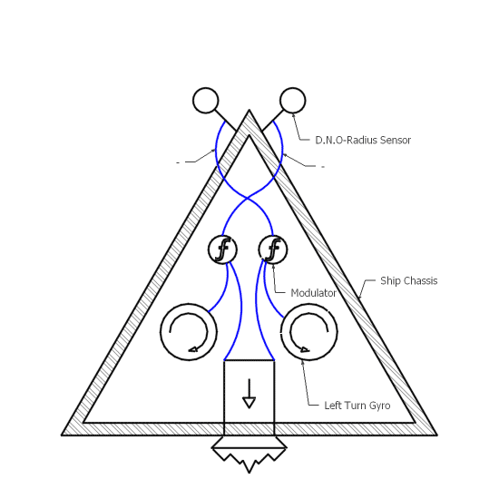

- Playing Asteroids with Braitenberg Vehicles
- Introduction
- Introduction to Braitenberg Vehicles
- Introduction To Asteroids
- Braitenberg Vehicles that Play Asteroids
- Designs of Asteroids Vehicles
- Asteroids Tournament
- Conclusion
- Related Work
- Appendices
- Bibliography
- Acknowledgments
Playing Asteroids with Braitenberg Vehicles
Introduction
Braitenberg Pilots is an implementation of Valentino Braitenberg’s Vehicles in the Asteroids video game. In Braitenberg Pilots I attempt to bridge the gap from Braitenberg’s famous thought experiment to a practical implementation. In my work I recreated some of Braitenberg’s original vehicles and created some vehicles of my own. With the recreated vehicles, I wanted to duplicate the original behavior described by Braitenberg as closely as possible. With my own vehicles I sought to create interesting, capable automated players of the Asteroids video game. To evaluate the efficacy of my agents I executed a tournament of agents and compared the performances of the vehicles (skip to Appendix F to see the vehicles I created firsthand).
Introduction to Braitenberg Vehicles
Braitenberg vehicles are the main agents in a biologically inspired thought experiment by Valentino Braitenberg published in his book Vehicles(Braitenberg, 1984). In Vehicles, Braitenberg develops a sequence of 14 increasingly sophisticated vehicles. The vehicles are constructed of sensors, motors, wheels, wires and bodies. Braitenberg also describes a tabletop world on which the vehicles operate. Vehicles perish when they stray over the edges of this world. Vehicles may harm or destroy each other. Later vehicles undergo evolutionary development wherein vehicles which survive for a time are duplicated with minor mutations. Braitenberg attributes lifelike qualities to his vehicles as they progress. For instance, vehicle one is said to have likes and dislikes while vehicle seven is said to be able to internalize concepts. Over the sequence of 14 vehicles Braitenberg ascribes the following qualities to their observed behavior: instincts, emotions, logic, concepts, ideas, foresight and egotism (Braitenberg, 1984).
Braitenberg takes an informal approach to the realities of his vehicles. His building blocks for creating vehicles are; sensors tuned to some quality of the environment, wires which transmit information from sensors to motors and threshold devices which help grant basic logical facilities to the vehicles. Each component is selected to mirror a real biological structure present in nature. Braitenberg’s vehicles are easy to understand and yet their behaviour is amazingly sophistocated.
Vehicle 1
Figure 1 Braitenberg Vehicle 1 (Braitenberg, 1984, pg. 4)
{kind=link}
Vehicles begins with a design involving a single sensor and motor. Depicted in Figure 1, vehicle 1 senses the absolute temperature of its environment. The sensor (half circle on a stalk) sends signals to a single motor at the rear of the vehicle which drives a wheel. The result is a vehicle that moves quickly through hot areas and slows down in cold ones (Braitenberg, 1984). Braitenberg describes the motivations of his vehicle as follows:
It is restless, you would say, and does not like warm water. But it is quite stupid, since it is not able to turn back to the nice cold spot it overshot in its restlessness. Anyway you would say, it is ALIVE, since you have never seen a particle of dead matter move around like that.
Braitenberg develops the subsequent vehicles by introducing a new component and combining it with the advances of the existing vehicles. This process of incremental development hints at the evolutionary techniques Braitenberg introduces in later sections. The technique of compounded design also results in complex behaviors reminiscient of living organisms.
Vehicle 7
Vehicle seven is able to form concepts and make generalizations. Vehicle seven gains this ability via an addition to its logical facilities; Mnemotrix connections. Mnemotrix connections are placed between all components of the vehicle. Mnemotrix is initially very resistant to signals. However, when two connected components are excited simultaneously, the Mnemotrix connection between them has its resistance lowered. Braitenberg describes the consequences of such connections:
One consequence, we have already seen, is concept formation. When it happens between different categories of things (such as red color and aggression), we prefer to call it association.
The vehicles following vehicle seven continue to grow in complexity and ability. Later vehicles even include earlier vehicles as encapsulated components providing primitive instincts to the later vehicles.
Braitenberg’s Vehicles reveals some of the common mechanisms of complex behavior. It demonstrates a practical implementation of evolution and dissects the results of that implementation. Vehicles does not distinguish between intention and accident; it grants observation the authority of truth. Overall, Vehicles conveys an intuitive understanding of behavior and agent design.
Introduction To Asteroids
 Figure 2 The Asteroids Video Game
Figure 2 The Asteroids Video Game
Asteroids is a two-dimensional action video game where players control a triangular ship. For more information, see the description of Asteroids in Appendix A or visit the game’s homepage.
Braitenberg Vehicles that Play Asteroids
In my work, I apply Braitenberg’s ideas to create agents capable of playing the video game Asteroids. My goal was to explore the capabilities of basic reactive agents, gain experience developing a real-time game engine with reactive agents and to create a Braitenberg vehicle which could achieve the highest score possible in the Asteroids video game. I deviated from Braitenberg’s designs because my work is implemented inside an existing game engine which was not capable of replicating all of his ideas. Braitenberg’s vehicles have rectangular bodies, but my agents retain the triangular ship-body of Asteroids. Braitenberg’s sensors were continuous but mine poll the environment at a fixed rate. I recreated the behavior of several of Braitenberg’s vehicles despite these differences.
The vehicle schematics in the following sections are intended to convey the high level design of the vehicles. In simpler vehicles the schematics are extremely accurate to the actual implementation. Some connections have been ommitted in more complex vehicles because there would simply be too many connections to legibly depict in this format. Also, the exact placement of sensors in vehicles with many sensors has been altered for clarity (usually because many sensors overlapped).
Sensors
Developing sensors to help my agents attain a high score was difficult. It was not obvious what attributes of the environment should be measured or how they should be measured or even how the measured attributes should be communicated to each vehicles’ motors. In general, I found greater success when I made changes which focused the vehicle’s ‘attention’ on the single most important (i.e. dangerous) feature of the environment; the nearest object.
Figure 3 Early design of an aggregated distance sensor. The sensor returns the distance A+B since both asteroids are inside its detection area.
{kind=link}
My early sensors took aggregated readings; accumulating data from all the asteroids in the sensor’s range (e.g. returning the cumulative distance from the sensor to each detected asteroid as in figure 3). This was ineffective because it often caused agents to take action in regards to groups of distant objects when a single nearby-object was a much greater threat. Eventually it became clear that sensors should report on the nearest object they detected. This change lead to vehicles which behaved as if they understood that nearby objects were more important than distant ones (an important fact that human players utilize to achieve high scores).
Choosing what attribute a sensor should measure was also a process of trial and error. Given an object, the obvious attributes we might report on are: speed, size, and distance. Measuring the speed of an object was not useful since something moving at high speed away-from or parallel-to the agent is not as dangerous as an object moving slowly toward the agent. Measuring the distance to the nearest asteroid proved very useful. It gave my agent’s correct priorities: nearby objects require action and the severity of that action increases as the object gets closer. I found these distance-to-nearest-object (D.N.O.) sensors to be so superior to the other alternatives that all of my final vehicle designs incorporate D.N.O. sensors.
 Figure 4 D.N.O.-Ray Sensors arranged to mimic a simple eye. The sensor right of center returns the distance A.
{kind=link}
Although my final vehicles all use D.N.O. type sensors, I varied the detection area (i.e. the area that an object must intersect with to be sensed) to create several different sub-types (for more details on how D.N.O. sensor operate refer to Appendix B). Differing the detection area of the sensor radically changed the influence it had on the vehicle. I began with a detection area defined by a line. D.N.O.-Line sensors were useful when used in bulk; arranged as in figure 4 they mirror the function of a primitive eye. However, smaller objects (especially missiles) could easily pass between the detection areas of D.N.R.-line sensors and go unnoticed until they were dangerously close to the agent. To correct this issue, I developed a D.N.O.-Radius sensor which detected objects in a radius centered around the sensor origin. This sensor never failed to detect objects but provided no information regarding the heading of the detected object. Finally I developed the D.N.O.-Cone sensor. These sensors balance the directional information of the D.N.O.-Line sensors with the dragnet approach of the D.N.O.-Radius sensor. This small set of sensors allows for a huge number of interesting and high-scoring behaviors.
Designs of Asteroids Vehicles
3B - Braitenberg Explorer
Figure 5 Braitenberg Vehicle 3B (Braitenberg, 1984, p. 11)
{kind=link}
 Figure 6 Asteroids Vehicle 3B
Figure 6 Asteroids Vehicle 3B
 Figure 7 A demonstration of Asteroids Vehicle 3B.
{kind=link}
The design of vehicle 3B is inspired by Braitenberg’s vehicle 3B. My version is equipped with two D.N.O-Radius sensors located on the nose of the ship as seen in figure 6. Vehicle 3B’s connections are inverted (depicted as blue connections annotated with ‘-‘) such that, when a sensor has no stimulus, the connected Motor is fired at full capacity. When a sensor is excited, the connected motor is inhibited and acts with less (or no) force. Vehicle 3B acts in a manner similar to the one Braitenberg describes for his own vehicle 3B,
…an EXPLORER. It likes the nearby source all right, but keeps an eye open for other, perhaps stronger sources, which it will sail to, given a chance, in order to find a more permanent and gratifying appeasement.
Creating this vehicle helped me understand the effects of inverting sensor stimuli which can be hard to predict in a vehicle with many competing sensors and motors. Inverted connections play an important role in all the F-series vehicles I designed later.
4A - Braitenberg Companion
 Figure 8 Asteroids Vehicle 4A
{kind=link}
Figure 9 A demonstration of Asteroids Vehicle 4A.
{kind=link}
Vehicle 4A resembles Braitenberg’s vehicle 4A in design and behavior. This vehicle has two D.N.O-Radius sensors symmetrically set to the left and right of the vehicles center-line. These sensors feed into a modulator. Braitenberg describes such a device as follows,
The activation of a certain sensor will make the corresponding motor run faster, but only up to a point, where the speed of the motor reaches a maximum. Beyond this point, if the sensor is activated even more strongly, the speed will decrease again…
Vehicle 4A is equipped with two such modulators which cause it to alternately dive towards and away from the nearest asteroid in a fashion similar to the one described by Braitenberg, “A 4A vehicle might navigate toward a source (as vehicle 2B would) and then turn away when the stimulus becomes strong, circle back and then turn away over and over again…” (Braitenberg, 1984, p. 15). Vehicle 4A seeks proximity with an asteroid, it seems to like the presence of the asteroid but is a fickle companion; abandoning its orbit if another asteroid gets close. I found parabolic modulators like the ones used in this vehicle difficult to utilize in competitive vehicles. They rely too heavily on exact calibration and often produce unreliable behavior in the dynamic environment of asteroids. My observations lead me to believe such modulators are better suited to environments with stationary stimulus sources.
1F - Hunter
 Figure 10 Asteroids Vehicle 1F
Figure 10 Asteroids Vehicle 1F
Figure 11 A demonstration of Asteroids Vehicle 1F.
{kind=link}
Vehicle 1F has an array of 32 D.N.O-Line sensors arranged as equally spaced spokes on a wheel. The arrangement is similar in concept to a primitive eye. The sensors are connected to the left and right turning motors such that vehicle 1F turns towards the nearest object it senses. Three forward sensors (highlighted in red in figure 10) are connected to the vehicle’s cannon. When two or more forward sensors are stimulated, the cannon is fired. These forward sensors are also connected to a reverse thruster such that when an object is in front of vehicle 1F the reverse thruster is fired. Although the design of 1F is simple, its behavior is surprisingly complex. Vehicle 1F chases down the nearest object, fires a spray of bullets and stalks the object at a safe distance. If the object is destroyed, vehicle 1F flies away in search of its next victim. If the object survives, 1F continues to hover a short distance away from the target attacking until the target object is destroyed.
Vehicle 1F exhibits extremely aggressive behavior. This behavior allows it to clear a screen of asteroids faster than any other vehicle I built. Unfortunately, 1F’s tendency to chase down asteroids occasionally leads it to crash into its target if the target crosses a screen edge. This happens because, like all of my sensors, D.N.O-Line sensors cannot detect objects across the edge of the screen which causes 1F to lose track of its target and accelerate forward directly into it.
2F - Archer
Figure 12 Asteroids Vehicle 2F
{kind=link}
Figure 13 A demonstration of Asteroids Vehicle 2F.
{kind=link}
Vehicle 2F is composed of four D.N.O.-Cone sensors dividing the area around 2F into four regions. Figure 12 depicts the arrangement of sensors and connections present in vehicle 2F. 2F features a slight turning bias to the right leading the vehicle to trace a large circle in the play area. This helps 2F locate asteroids. 2F is also equipped with a small D.N.O-Radius sensor which connects to a binary modulator controlling the vehicle’s hyper-jump. The prominent feature of 2F is a long, narrow D.N.O-Cone sensor controlling the vehicle’s cannon. This sensor is offset counter-clockwise to compensate for 2F’s natural clockwise patrol pattern.
Vehicle 2F patrols a large circle of the play area taking shots at anything it senses with its cannon sensor. Unlike 1F, 2F turns away from approachers and escapes anything which gets too close with a quick about-face turn. 2F appears to be passive-aggressive, fleeing from direct confrontation preferring to take shots at distant adversaries.
3F - Hopper
Figure 14 Asteroids Vehicle 3F
{kind=link}
Figure 15 A demonstration of Asteroids Vehicle 3F.
{kind=link}
Vehicle 3F was designed to mimic a strategy used by humans to play asteroids: remain in place and rotate, shooting any asteroids crossing the ship’s sights. 3F achieves this behavior by utilizing the turning-bias concept from vehicle 2F. 3F does not simply turn without regard however; a D.N.O-Line sensor rotated slightly to the left of 3F’s center line excites a left-turn gyroscope which causes 3F to track any sufficiently large target it comes across. A stationary player cannot hope to last long in asteroids and so 3F is equipped with a D.N.O.-Radius sensor for evasion. When triggered by an approaching asteroid the sensor excites the hyper-jump motor. These behaviors are demonstrated in figure 15.
Despite its simple strategy, 3F is extremely effective. By not accelerating it avoids the two most common killers of my asteroids vehicles: crossing the screen edges and building up too much speed to avoid a collision. It does have trouble finishing off the last one or two asteroids in later levels; they move too quickly for 3F to establish a target lock. Human players employing this strategy have great difficulty in aiming their shots and reacting quickly enough to be successful. This typically makes the strategy very low scoring for them. Yet, 3F was one of the highest scoring vehicles I tested.
4F - Bomber
Figure 16 Asteroids Vehicle 4F
{kind=link}
Figure 17 A demonstration of Asteroids Vehicle 4F.
{kind=link}
I designed 4F (figure 16) after asteroid vehicle 3C. I picked 3C because it was excellent at safely racing through cramped fields of asteroids. 4F uses 2 backwards-facing D.N.O-Cone sensors with inverted connections to steer away from imminent collisions. I originally designed 4F to fly and shoot forward but the ship’s cannon is fixed and so early versions of 4F would turn away from their target even as they were shooting. To rectify this I turned the sensors around and added a rear-facing set of three D.N.O-Line sensors to detect objects behind 4F and excite the cannon. Another issue with the original 3C design was its handling of objects directly ahead of the ship. When 3C is facing an asteroid head-on both turn sensors are activated and their gyroscopes counteract eachother. This leads 3C to occasionally crash into asteroids. To prevent this I added a small forward-facing D.N.O.-Cone sensor connected to 4F’s left-turn gyro. This causes 4F to perform a rapid about face when an object approaches from the front.
Asteroids Tournament
Description
One of my goals was to develop a Braitenberg vehicle which achieved the highest score possible in Asteroids. To evaluate my vehicles I implemented a tourney in the Asteroids engine. Participation is limited to vehicles which are capable of scoring points in Asteroids (i.e. they must be able to shoot and destroy some object). Each participant plays ten regular games of Asteroids (refer to Appendix A for details about what constitutes a game). I logged the score, lifespan, and number of lives played to track the results of the tournament. I took precautions to the prevent pseudo random elements of Asteroids from skewing the results unfairly. A pseudo random number, called the tourney-seed is chosen before the tourney begins. The tourney-seed is used to seed Asteroid’s pseudo random number generator directly before each participant begins playing its first game (refer to Appendix C for clarifications on the procedure).
Participants
- 1F - Hunter
- 2F - Archer
- 3F - Hopper
- 4F - Bomber
Scoring Rules
Rankings are based on highest mean score across games played per participant. Initial executions of the tournament faced a problem: certain vehicles accumulate extra lives faster than they lose them. To account for this issue the game is ended when a participant accumulates ten lives. This is a very strong indication that the vehicle is proficient enough to play indefinitely. Vehicles who reach ten lives are ranked on fastest time to reach ten lives.
Results of Tournament
| Vehicle | Mean Score | High Score |
|---|---|---|
| 1F - Hunter | 10,641.67 | 15,300 |
| 2F - Archer | 2,584.38 | 3,400 |
| 3F - Hopper | 46,543.75 | 62,375 |
| 4F - Bomber | 3,500 | 6,500 |
Analysis of Results
Surprisingly, the simplest agent, with the simplest strategy won. Vehicle 3F almost never died because the implementation of Asteroids I worked with grants vehicles a moment of invulnerability after hyper-space jumps. This left vehicle 3F vulnerable for only a breif moment: after it made a hyper-space jump and before its hyper-space jump engine had recharged. I did not foresee this flaw in the game’s balance when designing 3F. Of the remaining vehicles, 1F attained significantly higher scores despite its wrecklessly aggressive strategy. 1F also scored much faster than any other vehicle. Modifying 1F to avoid crossing the screen threshold might allow it to score enough points to gain new lives faster than it loses them. This would bring 1F’s score in line with 3F and it would reach such scores much more quicky than 3F.
For a full listing of results refer to Appendix
Conclusion
Summary
Braitenberg vehicles are both Reactive and Situated agents. Reactive agents are not well suited to long term planning but they excell in highly dynamic environments like the Asteroids game. Braitenberg vehicles are excellent short term prioritizers and their analog sensors make them very flexible in dynamic situations. They must have senses appropriate to their goals to have any chance of success. Braitenberg vehicles tend to be Scruffy agents also; they require plenty of fine tuning gained via trial and error. In this way they more closely resemble biological creatures than their Neat counterparts.
The agents I developed exhibit some complex behaviors even though their individual implementations are simple. Some of them (4F in particular) can even achieve arbitrarily high scores at Asteroids.
My vehicles are interesting to watch and they raise some questions for further consideration. Can situated agents like these be utilized in complex tasks? Are the more advanced Braitenberg vehicles really capable of all that Braitenberg described? What exactly is the value in discriminating between scruffy agents which have sophisticated behavior and neat agents with similar behavior?
Ideas for Future Work
- Port the engine to JavaScript or another modern web-platform.
- Develop an evolutionary algorithm for generating new vehicles similar to the one described in Braitenberg’s book.
- Create a commercial tablet game which tasks players to construct Braitenberg Vehicles to complete tasks.
- Applying Braitenberg agents as a subroutine in a more sophisticated agent to deal with complex, dynamic situations (e.g.crowd navigation).
- Integrate learning by association into the existing vehicles.
- Develop a toy similar to Lego’s Mindstorms with interchangeable sensors, motors and bodies.
Reactive agents like my pilots have complex reactive behavior patterns which make them excellent in dealing with unpredictable environments. They might be well suited to things like crowd navigation. However, this exact complex emergent behavior makes Braitenberg Pilots poorly suited to high stakes tasks like driving a vehicle. In such tasks, we prefer a robot which does not do anything unexpected and one which will perform consistently regardless of minor changes to its components.
Related Work
Appendices
Appendix A: Description of The Asteroids Video Game
Asteroids is a two-dimensional action video game. Players control a triangular ship inside a field of drifting asteroids. The ship can turn left and right, can fire forward and reverse thrusters (which apply force to the ship according to the direction it is facing), can shoot a cannon, and may teleport to a random location on the screen.
Players are pitted against asteroids, UFOs and missiles. Asteroids are represented by polygons. Each asteroid is created with a movement vector which is static, random and specific to that particular asteroid. Players can shoot an asteroid, UFO or missile with their cannon to destroy it. Destroyed asteroids may fragment into multiple smaller asteroids. UFOs shoot missiles which home to the player’s location. Colliding with an asteroid, UFO or missile is fatal to the player.
Objects in Asteroids ‘wrap’ around the edges of the screen. So when an object passes out of the left boundary of the screen it appears on the right side of the screen. The same wrapping applies to the vertical direction. In this way we can imagine Asteroids as taking place on the surface of a sphere.
Players receive points for destroying asteroids with their cannon. Players start with three lives to try and obtain as many points as possible; points persist between lives but are reset to zero when lives are depleted. If the player earns 4000 points they receive another life, if the player earns 2750 points a UFO is spawned.
Appendix B: Sensors
Distance To Nearest Object Sensor
Figure 18 A demonstration of the Distance To Nearest Object Radius sensor. Sensor’s detection area is indicated by a red circle.
{kind=link}
To help describe exactly how my sensors sense and report information I’ve combined the output from a D.N.O.-Radius sensor with a recording of the simulation which produced the output (figure 18). The X-axis represents time (in game frames) and the Y-axis represents the output value of the sensor. The sensors field of detection is demarcated by a red circle. The sensor reports the nearest point on any object inside its field of detection. The distance reported is normalize such that objects on top of the sensor origin would register a zero. Objects very near the outer edge of the sensor’s detection area register a value close to one. Notice how the reported value is irregular even though the asteroids being detected have a constant speed. This is caused by a combination of the rotation of the asteroid and its uneven surface. From frame 0 to around frame 11,000 the asteroid in the lower-right is being tracked. However around frame 11,000 the pair of asteroids on the left side of the screen drift closer to the sensor and become its target.
Appendix C: Tourney Random Seeding
The best way to convey the procedure undertaken to seed the random data of the tourney is with an example:
Given a tournament with three participants who each play X games:
1. Program begins execution
2. <Tourney-Seed> is assigned a pseudo random number
3. Tourney Begins
- Random number generator <Tourney-Generator> is seeded with <Tourney-Seed>
- Participant 1 plays X games
- Participant 1 is finished
- Random number generator <Tourney-Generator> is seeded with <Tourney-Seed>
- Participant 2 plays X games
- Participant 2 is finished
- Random number generator <Tourney-Generator> is seeded with <Tourney-Seed>
- Participant 3 plays X games
- Participant 3 is finished
4. Tourney is over
Appendix D: Using the Asteroids Software
~upload
Appendix E: Adding A Security Exception To Java
This project uses an unsigned JAR file which may be disallowed by your default Java settings.
If you are not presented with a dialog asking for permission to run the Applets on this site, you will have to add an exception to your Java Security settings:
- Open the Java Control Panel (Windows users may search for
Configure Javain Start)- Select the Security Tab
- Edit the
Exception Site Listand add the line:http://ndmacdon.github.io/
Appendix F: Program Demonstration
Fullscreen Demonstration
Visit the Fullscreen Demo page to see the program running in a larger window.
Appendix G: Tournament Results
~upload
Bibliography
Braitenberg, V. (1984). Vehicles. Cambridge, Massachusetts: The MIT Press.
Connell, J. H. (1992). SSS: A hybrid Architecture Applied to Robot Navigation. IEEE Conference on Robotics and Automation (pp. 2719-2724). New York: IBM T.J. Watson Research Center.
Nilsson, N. J. (1992). Toward Agent Programs With Circuit Semantics. Stanford, California: Stanford University.
Nilsson, N. J. (1994). Teleo-Reactive Programs for Agent Control. Journal of Artificial Intelligence Research, 139-158.
Russell, S. J., & Norvig, P. (2003). Artificial Intelligence. New Jersey: Pearson Education Inc.
Acknowledgments
I doubt this report would be even half as interesting as it is (hopefully it is interesting) without the help, guidance and ideas of my advising professor, Dr. Toby Donaldson. Thank you Toby, I am truly grateful for the lessons and experiences you shared with me and it’s been a lot of fun.